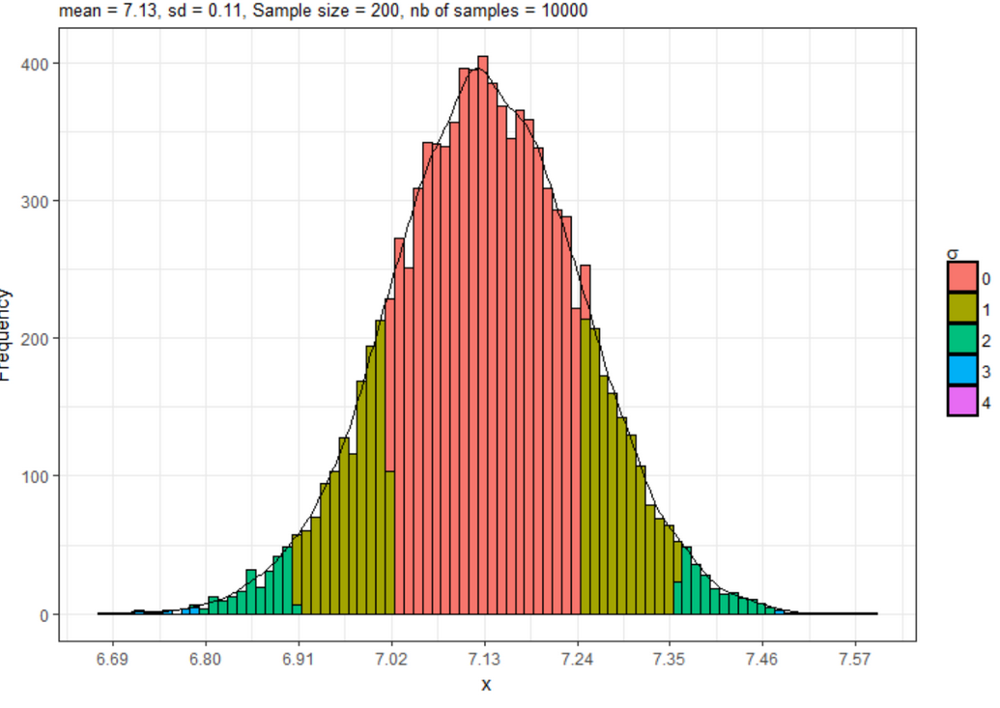

The Functional Central Limit Theorem is a functional extension of the central limit theorem for empirical distribution functions. The theorem states that an empirical distribution function that is appropriately centered and scaled converges to a gaussian process
Mathematically, the FCLT can be represented as:
\( \sqrt{n}(X_n - \mu) \xrightarrow{d} N(0, \sigma^2) \)
Here, \( X_n \) represents the sum of independent random functions, \( \mu \) is the mean, \( \sigma^2 \) is the variance, and \( \xrightarrow{d} \) denotes convergence in distribution as \( n \), the number of functions, grows.
The theorem has applications in various fields such as statistics, econometrics, and signal processing, providing insights into the behavior of complex systems composed of many random elements.
Formal statement
Let \(F_n\) be the empirical distribution of i.i.d. random variables with distribution function F. Define the centered and scaled \(F_n\) by \[ G_n(x) = \sqrt{n}(F_n(n)-F(x)) \] With n increasing, it converges to a gaussian distribution by the central limit theorem, for fixed x.
Proof sketch
A rigorous proof of this theorem involves advanced mathematichs tools. It all starts with: let \(\mathbf{X_n}\) be a sequence of identically distributed random variables \(X_i\) with mean 0 and variance 1. The sample mean defined as: \[ \overline{X} = \frac{1}{n} \sum_{i=1}^{n} X_i \] with n becoming more and more large, the distribution \(\overline{X}\) converges to a normal distribution with a mean \(\mu\) and variance \(\frac{\sigma^2}{n}\). This is a simple consequence due to the law of large numbers: the average of a large number of independet and identically distributed random variables tends to be close to the expected value.
Simulation
Below a python code snippet that simulates the above theorem:
import numpy as np
import matplotlib.pyplot as plt
def random_function(x):
# Define your random function here
return np.sin(x) + np.random.normal(0, 0.1, size=len(x))
def simulate_fclt(num_functions, sample_size):
# Generate independent random functions and sum them up
functions = [random_function(np.linspace(0, 1, sample_size)) for _ in range(num_functions)]
sum_function = np.sum(functions, axis=0)
# Plot the individual functions and their sum
plt.figure(figsize=(10, 6))
for i in range(num_functions):
plt.plot(np.linspace(0, 1, sample_size), functions[i], alpha=0.5, label=f'Function {i+1}')
plt.plot(np.linspace(0, 1, sample_size), sum_function, color='black', linewidth=2, label='Sum of Functions')
plt.title('Functional Central Limit Theorem Simulation')
plt.xlabel('X')
plt.ylabel('Y')
plt.legend()
plt.show()
# Set the number of functions and sample size
num_functions = 10
sample_size = 1000
# Simulate FCLT
simulate_fclt(num_functions, sample_size)
